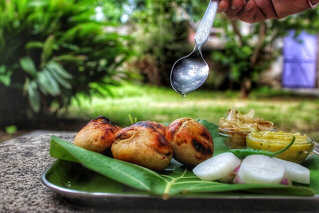

Litti Chokha
Bihar

Litti Chokha is a traditional and iconic dish from Bihar that represents the rustic flavors of rural India. Litti are round wheat flour balls stuffed with roasted gram flour (sattu) mixed with spices and herbs, which are then baked over coal or in a tandoor until crispy. These are served with chokha, a smoky mash of roasted vegetables like eggplant, tomato, and potato, seasoned with mustard oil and spices. The combination of the crispy litti and the flavorful chokha creates a unique taste experience. Often enjoyed with ghee, this dish is a symbol of Bihari cuisine and culture.